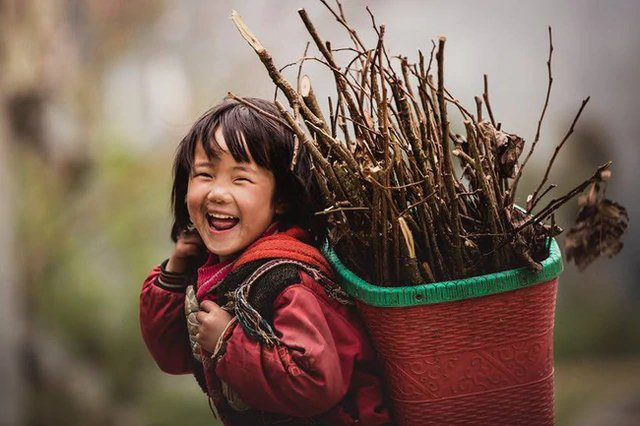
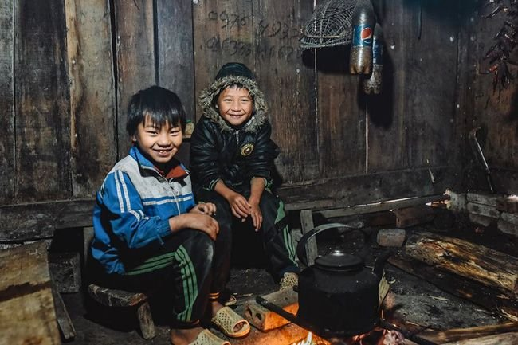
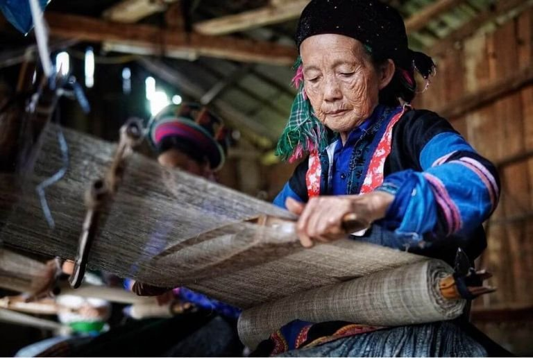
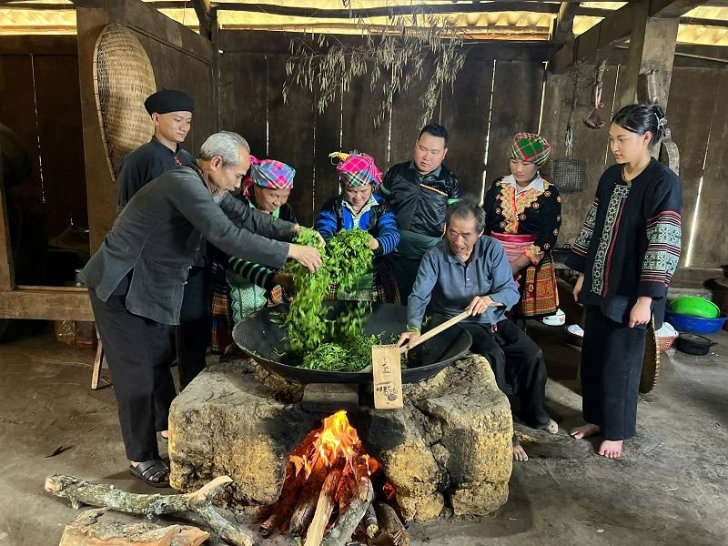

Gia tài của thanh củi khô
Ngọn lửa sưởi ấm đôi má em giữa đêm rét vùng cao
Mỗi khi sương muối bám trắng xóa vách ván nhà sàn, gia tài của thanh củi khô chất dưới gầm bếp lại trở thành điểm tựa sưởi ấm cho lũ trẻ em vùng cao chúng em đi qua những ngày giá rét. Nhìn những nhánh sa mộc chắt chiu từ nương đá lặng lẽ bắt lửa, em thấy từng vệt khói thơm nồng mùi nhựa rừng tỏa lan, hóa thành ngọn lửa sưởi ấm mùa đông che chở cho đôi má đỏ nẻ và tiếp thêm sức mạnh cho hành trình tìm chữ nơi bản xa.
Nhặt gùi củi khô qua những vệt sương mù tan trên nương đá

Mùa đông tràn về bản em không báo trước bằng một cơn mưa, mà bằng những đợt gió rét đậm xé dọc qua lòng thung lũng, nhuộm một màu xám đục đượm buồn lên từng mái đao nhà sàn. Khi cái lạnh cắt da cắt thịt lùa qua từng kẽ ván thưng, em quẩy chiếc gùi mây đã sờn mép qua vệt bùn trơn trượt để lên nương nhặt củi. Nằm im lìm dưới gốc cây sa mộc cổ thụ trên đỉnh núi ngàn mây quanh năm sương phủ, những nhánh củi khô qua bao đợt tuyết tan rét buốt đã co quắp lại, phủ một lớp rêu xám lạnh ngắt như đang ngủ quên giữa đại ngàn.
Em dừng chân bên dốc đá, nhẹ nhàng miết đôi bàn tay nứt nẻ qua từng thớ gỗ xù xì, cẩn thận nhặt từng thanh củi sa mộc chắc nịch rồi xếp vào gùi. Loại củi này khi phơi khô rất nhẹ nhưng chứa đầy dầu nhựa, chỉ cần một đốm than nhỏ là có thể bùng cháy rực rỡ và giữ lửa đượm qua suốt cả đêm dài. Dù đôi chân trần bấm sâu vào đá nhọn hằn lên sự buốt giá, em vẫn vững vàng bước từng bước chậm rãi trên con đường dốc ngược trở về bản.
Chiếc gùi trĩu nặng trên bờ vai nhỏ nhưng lòng em thấy ấm áp lạ kỳ. Em biết rằng, nơi miền núi thiếu thốn này, một gùi củi khô nhặt được sau buổi học không chỉ đơn thuần là củi đun bếp, mà là một phần gia tài nho nhỏ mà đứa trẻ nào cũng muốn tự tay gom góp. Mỗi nhánh củi mang về là một đốm lửa dự trữ, giúp căn nhà sàn của gia đình em đủ sức chống chọi lại cái lạnh nghiệt ngã của mùa đông giá rét.
Hơi ấm lửa hồng và câu chuyện rì rầm bên gian bếp ấm
Chiều muộn, khi bóng tối sập xuống rất nhanh trùm lên các dãy núi xa, em trút gùi củi xuống gầm sàn cùng các anh chị. Căn nhà sàn xám màu thời gian như bừng tỉnh khi mẹ rước ngọn lửa đỏ từ tay bếp, rồi cẩn thận đưa thanh củi sa mộc em vừa nhặt trên nương vào giữa lòng lò. Thớ gỗ khô gặp nhiệt bắt lửa rất nhanh, reo lên những tiếng "tách, đốm" giòn tan, xua đi sự u trầm lạnh lẽo bao phủ khắp không gian.

Em sà xuống bệt đất ngay cạnh mép bếp, đưa đôi bàn tay thâm tím vì sương muối hơ lên làn khói thơm nồng mùi nhựa rừng đặc trưng. Nhiệt lượng từ ngọn lửa sa mộc tỏa ra rực rỡ và đượm đà, xua tan cái lạnh rợn ngợp đang chực chờ ngoài vách lá. Trong ánh lửa bập bùng nhảy múa, đôi gò má ửng nẻ vì gió rét của em dần hồng trở lại, mang đến cảm giác dễ chịu và bình yên đến khó tả.
Em ngồi tựa vào lòng mẹ, ngắm nhìn những đốm than đỏ rực rơi xuống tấm gạt tàn bằng đất nén. Mẹ vừa xoay đều những củ khoai nương trên lớp than hồng, vừa chậm rãi kể cho chúng em nghe câu chuyện về những mùa đông năm cũ. Ngọn lửa sa mộc rồi sẽ cháy hết thành lớp tàn tro trắng mịn, nhưng hơi ấm đượm tình thương ấy đã che chở cho tuổi thơ chúng em, biến gian bếp nhỏ thành nơi ấm áp nhất trên đời giữa những đêm đông lạnh buốt ruột.
Tình yêu bản làng và hơi ấm được nuôi dưỡng từ những điều bình dị
Bếp lửa miền núi không chỉ là nơi nấu chín củ khoai, vắt mèn mén hay hong khô bộ quần áo ướt sương, mà còn là không gian gắn kết tình thân của bao thế hệ người vùng cao. Dù ngoài kia sương muối có bám dày trên mái lá hay gió rét có rít liên hồi qua khe ván, chỉ cần ngồi bên bếp lửa sa mộc hồng đượm, lũ trẻ chúng em luôn cảm nhận được sự che chở trọn vẹn từ gia đình.
Những thanh củi khô nhỏ bé được nhặt về từ nương xa chính là bài học đầu đời của em về sự chắt chiu, tính tự lập và tình yêu thương bản làng. Mỗi đốm lửa bùng lên bên bếp sàn không chỉ sưởi ấm đôi bàn tay nứt nẻ, mà còn thắp sáng nụ cười hồn nhiên, giúp chúng em có thêm nghị lực kiên cường để lớn lên giữa thiên nhiên khắc nghiệt.
◆ ◆ ◆
Tin liên quan
Xem thêm » Bếp lửa trong mắt em: Chuyện văn hóa vùng cao bắt đầu từ căn bếp
Bếp lửa trong mắt em: Chuyện văn hóa vùng cao bắt đầu từ căn bếp Món ăn mùa đông của em: Mèn mén, thắng cố, bắp ngô nướng ấm lòng giữa sương núi
Món ăn mùa đông của em: Mèn mén, thắng cố, bắp ngô nướng ấm lòng giữa sương núi Tiếng khèn đêm đông: Ngôn ngữ không lời của núi rừng sưởi ấm tuổi thơ vùng cao
Tiếng khèn đêm đông: Ngôn ngữ không lời của núi rừng sưởi ấm tuổi thơ vùng cao
Mùa đông - Mùa bà dạy em thêu hoa trên vải: Nhịp chỉ gieo ước mơ nơi lưng chừng mây
Mùi trà Shan Tuyết và chè dây: Nhấp ngụm thanh khiết giữa sương giăng sưởi ấm mùa đông vùng cao